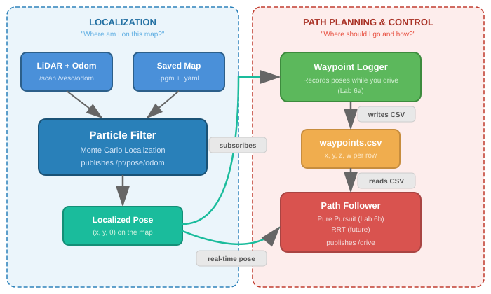
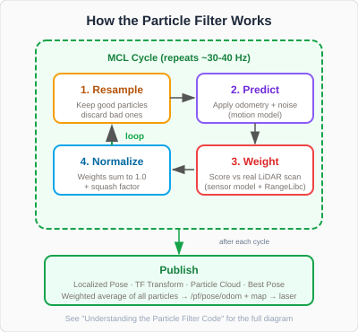
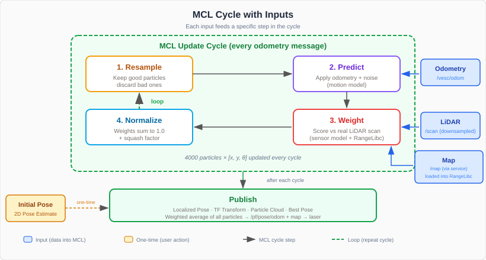
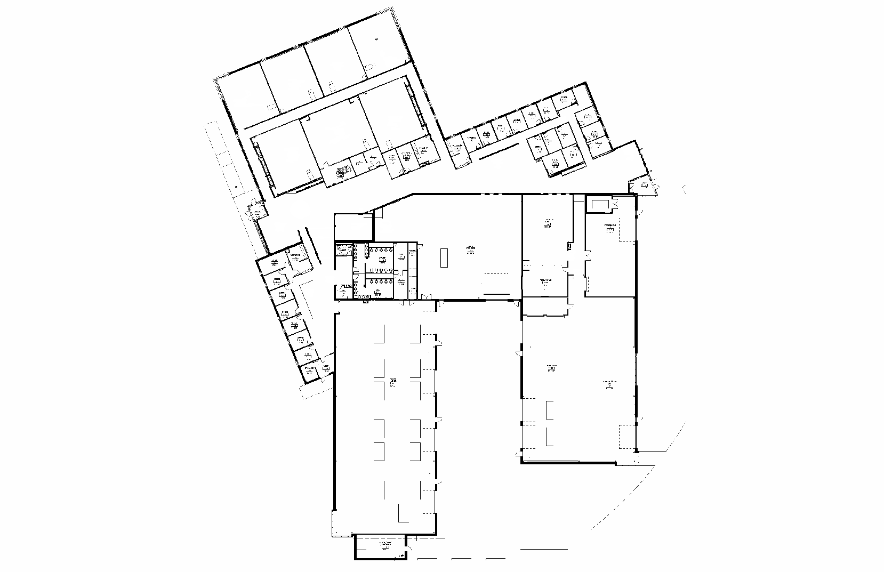

Particle Filter Localization¶
Where This Fits¶
The particle filter is the localization component of the autonomous driving pipeline. It answers “Where am I on this map?” so that other nodes can make decisions about where to go.


The left side (Localization) is what this tutorial covers — taking LiDAR and odometry data, comparing it against a saved map, and producing a localized pose. The right side (Path Planning & Control) uses that pose to record waypoints (Lab 6a) and follow them autonomously (Lab 6b).
Why a Standalone Particle Filter?¶
In the Nav2 tutorials you used AMCL — Nav2’s built-in particle filter — for localization. AMCL is tightly integrated with Nav2’s planner, controller, and behavior tree, making it ideal for point-and-click navigation.
This tutorial introduces the f1tenth/particle_filter, a standalone localization package. Both AMCL and this particle filter solve the same problem — “where am I on this map?” — using the same core algorithm (Monte Carlo Localization). The difference is how they’re used:
Nav2 AMCL |
f1tenth/particle_filter |
|
|---|---|---|
Integration |
Part of the Nav2 stack (lifecycle managed) |
Standalone node (runs independently) |
TF published |
|
|
Use case |
Nav2 navigation (planner + controller) |
Custom controllers (pure pursuit, follow the gap, etc.) |
Ray casting |
Standard CPU |
RangeLibc with GPU acceleration (CUDA on Jetson) |
Why learn both? Nav2 handles the full navigation pipeline for you — but in robotics and racing, you often need direct control over the car’s behavior. A standalone particle filter gives you localized pose data that you can feed into your own algorithms (pure pursuit, MPC, custom raceline followers) without the overhead of Nav2’s planner and controller. This is how competitive F1TENTH teams operate: lightweight localization + custom control for maximum speed.
Once you have a saved map, you can use a particle filter (Monte Carlo Localization) to localize the vehicle within that map in real time. This tutorial uses the f1tenth/particle_filter package with RangeLibc for fast ray casting.
Note
RangeLibc is a compiled Python library — it is imported automatically by the particle filter node at startup. You do not need to run it separately. As long as it was built correctly (see SLAM Toolbox for the fix script), it will work transparently in the background.
How It Works¶
The particle filter maintains a set of hypotheses (particles) about where the car might be on the map. Each particle represents a possible pose (x, y, heading). On each LiDAR scan, the filter:
Resamples — particles with higher weights are duplicated; poor matches are discarded.
Predicts new particle positions using wheel odometry (with added noise).
Weights each particle by how well its simulated LiDAR scan matches the real scan.
Normalizes — adjusts weights so they sum to 1.0 (applies squash factor to prevent particle collapse).
Over time the particles converge on the vehicle’s true location.
Publishing¶
After each MCL cycle completes, the filter computes the weighted average of all particles — this becomes the best estimated pose. It then publishes that pose and several visualization outputs so that other nodes and RViz2 can use the result:
Localized Pose (
/pf/pose/odom) — the primary output. Your pure pursuit node, waypoint logger, or any other node that needs to know where the car is subscribes to this topic.TF Transform (
map→laser) — tells ROS where the car is relative to the map so that LiDAR scans and the map align in RViz2.Particle Cloud (
/pf/viz/particles) — all particle hypotheses displayed as arrows in RViz2 for debugging.Best Pose (
/pf/viz/inferred_pose) — a single arrow in RViz2 showing the estimated pose.
Publishing happens every cycle (~30-40 Hz), giving downstream nodes a continuous stream of localization data.


For a deeper look at each step with code examples, see Understanding the Particle Filter Code.
Topics¶
Subscribed (Inputs)
/scan — sensor_msgs/LaserScan
LiDAR scan data. Downsampled by
angle_stepbefore use in the Weight step.
/vesc/odom — nav_msgs/Odometry
Wheel odometry from the VESC. Used in the Predict step to move particles.
/initialpose — geometry_msgs/PoseWithCovarianceStamped
Initial pose set via RViz2’s “2D Pose Estimate” button. A one-time action that scatters particles around the clicked location.
/map — nav_msgs/OccupancyGrid
Saved map loaded into RangeLibc at startup for ray casting. Fetched via service call from the map server.
Each input feeds a specific step of the MCL cycle:


Published (Outputs)
/pf/pose/odom — nav_msgs/Odometry (Localized Pose)
The filter’s best estimate of where the car is on the map. This is what your pure pursuit node or waypoint logger subscribes to. Includes position (x, y), heading, speed, and a covariance matrix indicating confidence.
TF: map → laser (TF Transform)
Tells ROS the car’s position on the map by publishing a transform directly from
maptolaser. This is a shortcut — a standard ROS TF tree would gomap→odom→base_link→laser, but this particle filter skips the intermediate frames. Without this transform, the map and LiDAR scans would not align in RViz2.
/pf/viz/particles — geometry_msgs/PoseArray (Particle Cloud)
The current set of particle hypotheses, displayed as arrows in RViz2. A tight cluster means the filter is confident. A spread-out cloud means it is still searching. Useful for diagnosing localization issues.
/pf/viz/inferred_pose — geometry_msgs/PoseStamped (Best Pose)
A single arrow in RViz2 showing the weighted average pose. This is the same value published on
/pf/pose/odombut as a simpler message type for easy visualization.
The full picture — inputs feeding the MCL cycle, and outputs published after each cycle:

Run Steps¶
The particle filter ships with a default map (lab_map_clean) already configured. If this is your map, no action is needed — skip to Step 2.


Note
Using a different map? If you need to point the particle filter at a different map, expand the steps below.
Copy your map file into the package’s
maps/directory:cp ~/f1tenth_ws/src/f1tenth_system/f1tenth_stack/maps/my_map.pgm \ ~/f1tenth_ws/src/f1tenth_system/particle_filter/maps/Create a YAML metadata file based on the existing template:
cp ~/f1tenth_ws/src/f1tenth_system/particle_filter/maps/lab_map_clean.yaml \ ~/f1tenth_ws/src/f1tenth_system/particle_filter/maps/my_map.yamlEdit
my_map.yamlto match your map:image: my_map.pgm resolution: 0.05 origin: [-19.8, -36.1, 0] negate: 0 occupied_thresh: 0.65 free_thresh: 0.25
Update
localize.yamlto use your map name:code ~/f1tenth_ws/src/f1tenth_system/particle_filter/config/localize.yaml
Find the
map_serversection and change the map name:map_server: ros__parameters: map: 'my_map'
Rebuild the package so the map files are installed to the share directory:
cd ~/f1tenth_ws colcon build --packages-select particle_filter source install/setup.bash
Start the car stack as usual:
cd ~/f1tenth_ws
source /opt/ros/humble/setup.bash
source install/setup.bash
bringup
cd ~/f1tenth_ws
source /opt/ros/humble/setup.bash
source install/setup.bash
ros2 launch particle_filter localize_launch.py
Note
localize_launch.py handles the map server and lifecycle transitions internally — you do not need to run nav2_map_server separately.
cd ~/f1tenth_ws
source /opt/ros/humble/setup.bash
source install/setup.bash
rviz2 -d ~/f1tenth_ws/install/particle_filter/share/particle_filter/rviz/pf.rviz
This loads a pre-configured RViz2 layout with the map, particle cloud, and inferred pose displays already set up. No manual configuration needed.
The particle filter starts with particles spread randomly across the map. You must tell it roughly where the car is to begin localization:
In RViz2, click 2D Pose Estimate in the toolbar
Click on the map where the car is located
Drag in the direction the car is facing, then release
The particles will converge around your selected location.
Note
The more accurately you set the initial pose, the faster the filter will converge. If the particles do not converge, try setting the pose again from a clearer location on the map.
Drive the car using the PlayStation controller. As the car moves, the particle cloud will tighten and track the vehicle’s position on the map. The best estimated pose is published on /pf/pose/odom.
Key Parameters¶
Tune the particle filter by editing:
code ~/f1tenth_ws/src/f1tenth_system/particle_filter/config/localize.yaml
The key parameters are:
Parameter |
Default |
Description |
|---|---|---|
|
|
Number of particles — more particles = more accuracy but higher CPU cost |
|
|
LiDAR downsample factor — higher = faster but less accurate |
|
|
Ray casting method (see below) |
|
|
Heading noise — increase if filter diverges at speed |
range_method Options¶
Method |
Performance |
Notes |
|---|---|---|
|
Fastest |
Requires RangeLibc compiled with CUDA — use on Jetson Orin |
|
Fast |
CPU only — recommended fallback if no CUDA |
|
Fast |
Pruned variant of cddt |
|
Moderate |
CPU only, no precomputation |
|
Slowest |
Brute force — use only for debugging |
Note
If you built RangeLibc using the fix_range_libc.sh script on the Jetson Orin, rmgpu should work. If you see CUDA errors at runtime, fall back to cddt by editing range_method in ~/f1tenth_ws/src/f1tenth_system/particle_filter/config/localize.yaml and setting rangelib_variant to 4.
Troubleshooting¶
Problem |
Solution |
|---|---|
Particles spread across the whole map |
Set the initial pose again using 2D Pose Estimate in RViz2 |
Filter diverges while driving |
Increase |
CUDA errors on launch |
Change |
|
Ensure map_server is running and the map path is correct |
Particles not moving |
Confirm |